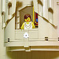

|
|
|
2 Samuel 6
|
 God
Kills Man for Touching Ark God
Kills Man for Touching Ark
|
| 6:1
Again, David gathered together all the chosen men of Israel, thirty thousand.
|
| 6:2
And David arose, and went with all the people that were with him from
Baale of Judah, to bring up from
thence the ark of God, whose name is called
by the name of the LORD of hosts that dwelleth between the cherubims. |
 (6:2-3) (6:2-3)
"They set the ark of God upon a new cart, and brought it out of the house of Abinadab."
How long was the ark of the covenant at Abinadab's house?
 (6:2) (6:2)
"The Lord of Hosts ... dwelleth between the cherubims."
|
| 6:3
And they set the ark of God upon
a new cart, and brought it out of the
house of Abinadab that was in Gibeah: and Uzzah and Ahio, the sons of
Abinadab, drave the new cart.
|
| 6:4
And they brought it out of the house of Abinadab which was at Gibeah,
accompanying the ark of God: and Ahio went before the ark. |
|
| 6:5
And David and all the house of Israel played before the LORD on all manner
of instruments made of fir wood, even on harps, and on psalteries, and on
timbrels, and on cornets, and on cymbals. |

 (6:6-7) Uzzah tries to keep the ark from falling off
the cart, and God kills him for it. I guess it was God's way of saying thanks. God is so taken with
this story that he records it twice in the Bible: here and in 1 Chronicles 13:9-10.
But in the 2 Samuel story, God kills Uzzah at "Nachon's threshingfloor", while in 1 Chronicles it
happens near the "threshingfloor of Chidon."
(6:6-7) Uzzah tries to keep the ark from falling off
the cart, and God kills him for it. I guess it was God's way of saying thanks. God is so taken with
this story that he records it twice in the Bible: here and in 1 Chronicles 13:9-10.
But in the 2 Samuel story, God kills Uzzah at "Nachon's threshingfloor", while in 1 Chronicles it
happens near the "threshingfloor of Chidon."
Where did God kill Uzza?
God's 77th Killing
(6:6) "When they came to Nachon's threshingfloor, Uzzah put forth his hand to the ark of God, and took hold of it;
for the oxen shook it."
(6:7) "And the anger of the LORD was kindled against Uzzah; and God smote him there for his error;
and there he died by the ark of God."
|
| 6:6
And when they came to Nachon's threshingfloor
, Uzzah put forth his hand to
the ark of God, and took hold of it; for the oxen shook it.
|
| 6:7
And the anger of the LORD was kindled against Uzzah; and God smote him there for his error;
and there he died by the ark of God.
|
| 6:8
And David was displeased, because the LORD had made a breach upon Uzzah:
and he called the name of the place Perezuzzah to this day.
|
| 6:9
And David was afraid of the LORD that day, and said, How shall the ark of
the LORD come to me?
|
| 6:10
So David would not remove the ark of the LORD unto him into the city of
David: but David carried it aside into the house of Obededom the Gittite.
|
| 6:11
And the ark of the LORD continued in the house of Obededom the Gittite
three months: and the LORD blessed Obededom, and all his household. |
David Exposes Himself Before God
|
| 6:12
And it was told king David, saying, The LORD hath blessed the house of
Obededom, and all that pertaineth unto him, because of the ark of God. So
David went and brought up the ark of God from the house of Obededom into the
city of David with gladness.
|
| 6:13
And it was so, that when they that bare the ark of the LORD had gone six
paces, he sacrificed oxen and fatlings. |
|
| 6:14
And David danced before the LORD with all his might; and David was girded with a linen
ephod. |


 (6:14-23)
(6:14-23)
King David dances nearly naked in front of God and everybody. When Michal criticizes him for exposing himself, God punishes her by
having "no child unto the day of her death." Although 2 Sam.21:8 says that she had five sons (which were sacrificed
to God by David to stop God from starving people to death).
 (6:14) "And David danced before the LORD with all his might; and David was girded with a linen ephod." (6:14) "And David danced before the LORD with all his might; and David was girded with a linen ephod."
What the Bible says about nudism
Is dancing a sin?
|
| 6:15
So David and all the house of Israel brought up the ark of the LORD with
shouting, and with the sound of the trumpet.
|
| 6:16
And as the ark of the LORD came into the city of David, Michal Saul's
daughter looked through a window, and saw king David leaping and dancing
before the LORD; and she despised him in her heart.
|
| 6:17
And they brought in the ark of the LORD, and set it in his place, in the
midst of the tabernacle that David had pitched for it: and David offered
burnt offerings and peace offerings before the LORD. |
|
| 6:18
And as soon as David had made an end of offering burnt offerings and peace
offerings, he blessed the people in the name of the LORD of hosts. |
|
| 6:19
And he dealt among all the people, even among the whole multitude of
Israel, as well to the women as men, to every one a cake of bread, and a
good piece of flesh, and a flagon of wine. So all the people departed every
one to his house. |
|
| 6:20
Then David returned to bless his household. And Michal the daughter of Saul
came out to meet David, and said, How
glorious was the king of Israel to day, who uncovered himself to day in the
eyes of the handmaids of his servants, as one of the vain fellows
shamelessly uncovereth himself! |
(6:20) "Michal ... said, How
glorious was the king of Israel to day, who uncovered himself to day in the
eyes of the handmaids of his servants, as one of the vain fellows
shamelessly uncovereth himself!"
|
| 6:21
And David said unto Michal, It was before the LORD, which chose me before
thy father, and before all his house, to appoint me ruler over the people of
the LORD, over Israel: therefore
will I play before the LORD. |
(6:22) "I will yet be more vile than thus, and will be base in mine own sight: and of the
maidservants which thou hast spoken of, of them shall I be had in honour."
(6:23)
"Michal the daughter of Saul had no child unto the day of her death."
How many children did Michah have?
|
| 6:22
And I will yet be
more vile than thus, and will be base in mine own sight: and of the
maidservants which thou hast spoken of, of them shall I be had in honour.
|
| 6:23
Therefore Michal the
daughter of Saul had no child unto the day of her death.
|
|